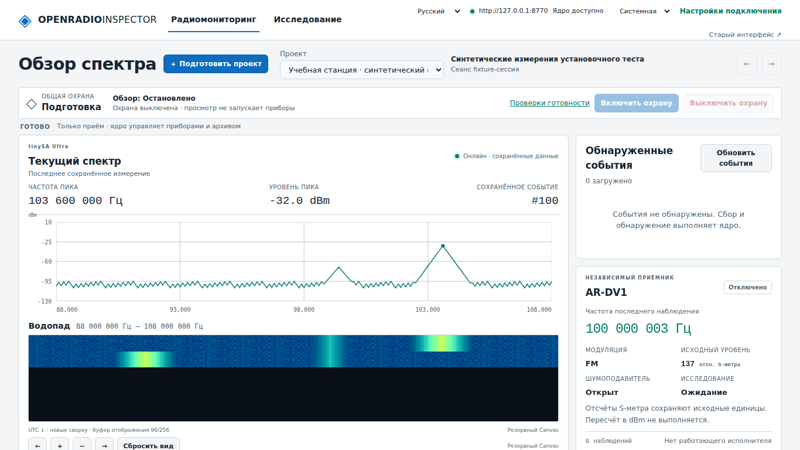
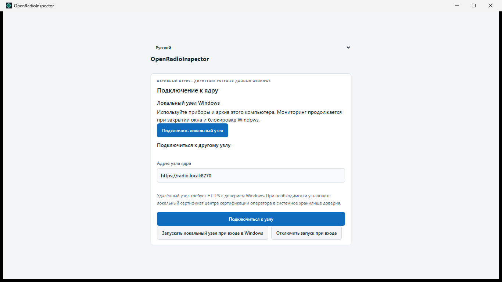
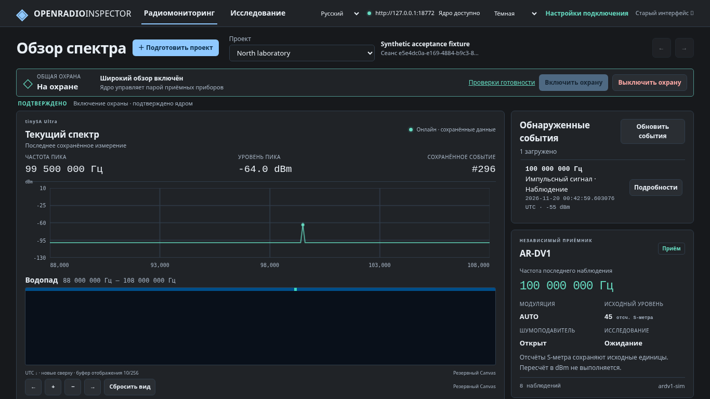
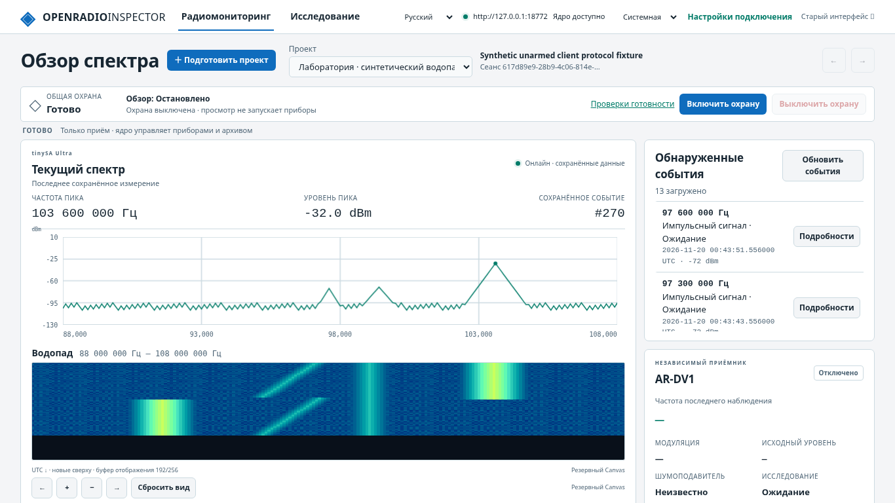
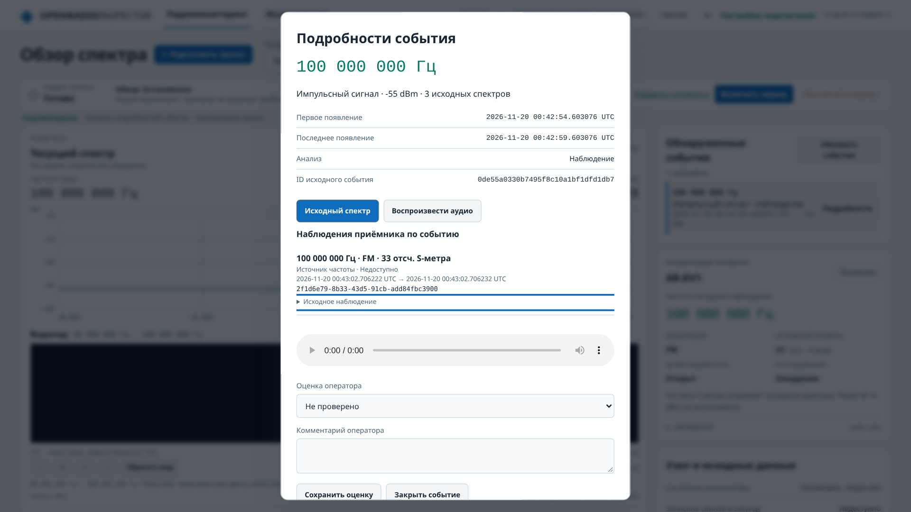
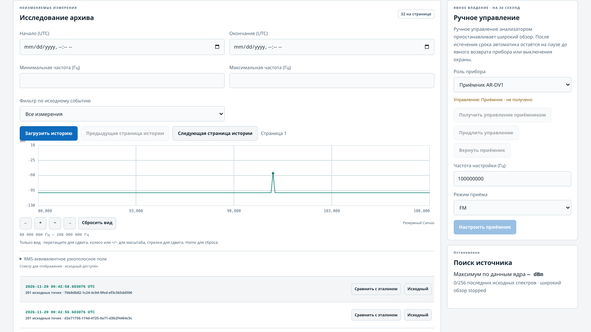

Открытие узла
Сверьте название платформы, версию и SHA-256 пакета с ведомостью выпуска, полученной отдельно. На Windows и macOS также проверьте системную подпись доверенного издателя. Перед обновлением сохраните предыдущий установщик и резервную копию архива на другом диске.
Raspberry Pi 5 · ARM64
Подготовьте Raspberry Pi OS 64-bit, 8 ГБ ОЗУ и SSD под /var/lib/openradioinspector-pi-rc. На Pi команда dpkg --print-architecture должна вывести arm64. Из каталога проверенного комплекта с одним пакетом выполните следующие команды.
sha256sum -c SHA256SUMS
sudo dpkg -i ./openradioinspector-pi-rc_*_arm64.deb
systemctl is-active openradioinspector-pi-rcОткройте в Chromium http://127.0.0.1:8770/modern/. В /dev/serial/by-id/ найдите два устойчивых имени USB-портов. Служба использует учётную запись ori-pi-rc с доступом через dialout. Диагностика запуска доступна по journalctl -u openradioinspector-pi-rc -b. Справочник установлен в /usr/share/doc/openradioinspector-pi-rc/operator-guide/index.html.

0.4.0-1 для Raspberry Pi. Chromium 158 на виртуальной машине ARM64 с Ubuntu 24.04.5, 1366 × 768. В учебном архиве сохранены 96 строк водопада. Последний свип pi-guide-synthetic-095 показал пик на 103,6 МГц. Охрана выключена. Проверка экрана физической Pi 5 ещё предстоит.Windows 11 x64
Проверьте действительность подписи Authenticode в свойствах установщика и соответствие издателя выпуску. Запустите установщик NSIS для текущего пользователя. Он размещает Tauri, WebView2 и локальное ядро. В окне выберите «Подключить локальный узел» и подтвердите локальное соединение. Сверьте два отдельных COM-порта в диспетчере устройств. Для работы с уже настроенным Pi выберите «Подключиться к другому узлу», укажите доверенный HTTPS-адрес и выполните сопряжение.
Локальный архив по умолчанию находится в %LOCALAPPDATA%\OpenRadioInspector-Windows-RC1. Руководство открывается из runtime\operator-guide\index.html в каталоге установленного приложения.

0.4.0-rc.1 имела статус Authenticode NotSigned. При попытке открыть мониторинг проверка не смогла задать адрес отдельного учебного ядра. Сохранён экран выбора подключения.macOS · Apple Silicon
Скопируйте OpenRadioInspector RC.app из проверенного DMG в «Программы» и извлеките образ. Проверьте приложение штатными средствами Gatekeeper. В приложении откройте панель локальной службы, нажмите «Запустить службу» и при запросе macOS разрешите фоновый элемент. Затем выберите два последовательных порта и откройте «Пульт наблюдения». Справочник расположен по пути /Applications/OpenRadioInspector RC.app/Contents/Resources/operator-guide/index.html.
Настройка приёма и эталона
- Откройте «Радиомониторинг». Выберите проект или «Подготовить проект». Укажите место, тракт и антенну, отдельные порты tinySA Ultra и AR-DV1. Для обучения выберите симуляторы и отдельный архив. Для аппаратного сеанса сверьте модель, прошивку и режим приёма каждого прибора с его профилем.
- Запустите «Проверки готовности». Проверьте запись на диск и свободное место с учётом журнала WAL и резервной копии. «Готов» означает, что удалось выполнить проверки конфигурации. Запись подтверждают новые ID и UTC сохранённых измерений.
- В плане обзора задайте границы поддиапазонов и срок возврата. Сетка от 100 000 до 1 300 000 000 Гц с шагом 10 000 Гц содержит 129 991 точку. На окно приходится до 290 точек. Для обзорного прохода выберите RBW 30 кГц, для подробного — 10 кГц. Частотный шаг и RBW задают разные свойства измерения.
- Сохраните версию плана. Соберите фон при обычной обстановке, проверьте исходники каждой полосы и подтвердите эталон. Для сеточного плана нужны минимум 20 полных свипов каждого окна и интервал от 60 секунд. В строке готовности указаны окна, допущенные ядром к автоматическому эталону. Окна без подтверждённого диапазона подсчитаны отдельно. Изменение плана требует нового совместимого эталона.
- Включите охрану после успешной предпроверки. Проверьте статус охраны, дату последнего свипа, состояние приёмника и время возврата к поддиапазону. Генератор tinySA в этом режиме выключен.

Радиомониторинг
Выберите поддиапазон. Обзорная панорама объединяет пики последних принятых окон, водопад показывает изменение уровней во времени, а спектр последнего окна сохраняет свои реальные границы. На водопаде новые строки появляются сверху. Пустые участки панорамы означают отсутствие отсчётов для этого клиента. По команде «Просмотреть окно панорамы» доступны номер окна, границы, UTC и исходник.
Сверьте измеренные окна с общим числом, завершённые проходы, возраст самой старой части покрытия и фактический интервал возврата. Для совместимого ядра строка «Проверка поддиапазона» показывает статус измерительного профиля, а под последним окном указана его собственная проверка.
- Поддерживается профилем прибора
- Ядро отнесло данную полосу к поддерживаемой конфигурации. Метрологические выводы для конкретного тракта требуют его калибровки.
- Диапазон проверен частично / диапазон не проверен
- Проверьте границу профиля. Для участка выше 800 МГц требуется сравнение с подходящим опорным сигналом на установленной системе. Проход по частотам сам по себе показывает покрытие сетки.
- Учебные данные / ядро не сообщило результат
- Первый статус обозначает синтетические исходники. Второй означает, что у записи отсутствует квалификация профиля. В обоих случаях для аппаратного заключения нужна отдельная запись стенда.

В очереди нажмите «Подробности». Карточка показывает частоту, UTC и привязанное наблюдение AR-DV1 с исходными отсчётами S-метра. Нажмите «Исходный спектр», чтобы открыть именно свип этого события и его таблицу точек. Исходник можно сохранить как JSON. Esc возвращает фокус в карточку, затем к выбранному событию.

На Mac выберите событие в очереди пульта. «Открыть исходник» показывает источник текущего сеанса с подписью «ИСТОРИЯ» или открывает отдельный просмотр исходника другого сеанса. В карточке раздельно даны факты измерения, справка и решение оператора. «В очередь AR-DV1» передаёт ссылку на исходник. Реальное наблюдение появляется после выполнения задания приёмника.
Исследование одного сигнала
В WebUI и Windows нажмите «Исследование» или Alt + R. По Alt + M открывается радиомониторинг. Задайте UTC, частоту или событие в фильтрах истории и нажмите «Загрузить историю». Выберите строку для спектра или «Сравнить с эталоном» для совместимого эталона. Ссылку «Исходный» используйте для проверки UTC, единиц, всех точек и квалификации нужного свипа. На Mac найдите источник по UTC и частоте в архиве пульта.

Парная повторная проверка
В карточке события поддерживающее ядро показывает сохранённый результат. Чтобы оценить зарегистрированные повторы на WebUI/Windows, в «Исследовании» откройте «Сравнение парных измерений», выберите событие и загрузите JSON со ссылками на архив. Укажите исходную пару initial, 10–22 соседние точки по обеим сторонам частоты в отступах 20–120 кГц (neighbors), контрольные точки на −100 и +100 кГц (controls.lower и controls.upper) и один или два повтора (repeats). Каждая ссылка содержит sweep_id и массив observation_ids от 1 до 32 исходных наблюдений. Файл ограничен 64 КиБ. Сохраните шаблон списка источников и замените каждое учебное обозначение идентификатором своего архивного измерения. Для двух повторов добавьте вторую пару в массив repeats.
Выбирайте исходный свип, по которому зарегистрирован пик события. Для соседей укажите разные частоты на сетке 10 кГц. Контрольные пары берутся после исходного измерения и фона, повторы — из отдельных последовательных визитов на центральную частоту. Нажмите «Рассчитать повторную проверку». Ядро берёт уровни из архива, проверяет совпадение сеанса, перекрытие интервалов внутри каждой пары и совместимость настроек.
В каждом повторе сравните разность tinySA в дБ, падение AR-DV1 в исходных отсчётах и два результата. «Сигнал повторился» означает, что прибор, обнаруживший исходный сигнал, снова зарегистрировал его по отношению к контролям. «Расхождение повторилось» дополнительно требует, чтобы второй прибор остался в допустимых пределах фона. У каждого итога свой числитель и общее число повторов. При отсутствии сохранённой проверки найдите привязанные исходники и подготовьте список для расчёта.
Для перестройки анализатора получите ручное управление перед узким поиском. Во время такого поиска широкий обзор может быть приостановлен. По завершении нажмите «Вернуть анализатор» и убедитесь, что широкая полоса получает новые окна. Сегмент AR-DV1 запускается при свободном порте приёмника. Уровень AR-DV1 сохраняется в исходных отсчётах S-метра.
Служба, архив и восстановление
USB-портами и записью владеет ядро на выбранном узле. Закрытие вкладки на Pi, окна Windows или выход из приложения по ⌘ + Q на Mac оставляет отдельную запущенную службу работать. Остановка приёма, снятие с охраны и остановка службы — отдельные команды. После повторного открытия сверьте узел, сеанс, свежие UTC и непрерывность исходных ID. На Windows сон и выход пользователя прерывают покрытие. Автозапуск при входе включается отдельно.
- Ошибка USB
- Уточните затронутый прибор по сообщению его исполнителя. Проверьте питание, кабель, постоянный путь или COM-порт и право доступа. Подключите прибор к тому же входу, выполните «Проверить состояние» и проверьте два новых исходных измерения с UTC. Интервал простоя учитывайте как пропуск.
- Мало места или ошибка записи
- Проверьте доступное место после резервов, очередь и права каталога. Сохраните копию архива, освободите место на SSD или выберите подготовленный диск. Для возобновления выполните предпроверку и проверьте новую запись в истории. Прогноз на сутки рассчитывается по наблюдавшимся данным и резерву.
- Обновление и откат
- Остановите сбор и службу штатной командой. На Pi используйте
sudo systemctl stop openradioinspector-pi-rc, на Windows — «Остановить локальный узел и мониторинг», на Mac — остановку в панели службы. Скопируйте весь каталог данных и конфигурацию в отдельную папку. После установки проверьте версию, чтение прежнего свипа и новую запись. При возврате к старому ядру сверьте совместимость схемы. Для ядра, читающего только v6, из остановленной RC создайте отдельную копию черезori-core archive-materialize SOURCE.sqlite3 NEW.sqlite3. Храните исходный v7 и резервную копию отдельно.
Приёмка на стенде
Для каждой платформы фиксируют SHA установленного пакета, ОС, способ запуска службы и фактический интерфейс. Проверяют установку без сети, запуск после перезагрузки или входа, закрытие и открытие окна, архив после обновления и отката. Отдельно на физических tinySA и AR-DV1 проверяют идентификацию, readback, верхнюю полосу с опорным сигналом, сравнение прямого приёма при том же RBW, отключение и возврат каждого USB-прибора и восемь часов непрерывной работы.
Полная программная нагрузка длится 1800 с при 10 свипах и 10 наблюдениях в секунду, по 4096 точек на свип. Для трёх окон WebUI проверяют показ каждого из 54 000 сочетаний «свип/клиент» после рисования и p95 до 250 мс от предложения исходника. Архив, подтверждения источников, звук, восстановление и физический стенд проверяют по своим журналам. Успех отдельного вида испытания относится к его хосту и сборке.
Четыре снимка общей веб-сборки получены на Debian x86-64. Кадр установленного пакета для Pi получен на виртуальном узле ARM64. На Windows снято окно подключения установленной инженерной версии. Для снимков физического экрана Pi 5 и работающего мониторинга в установленном WebView2 нужны отдельные проверки. Все измерения в иллюстрациях учебные. Снимок можно открыть в полном размере. Контрольные суммы файлов и параметры захвата перечислены в ведомости иллюстраций.